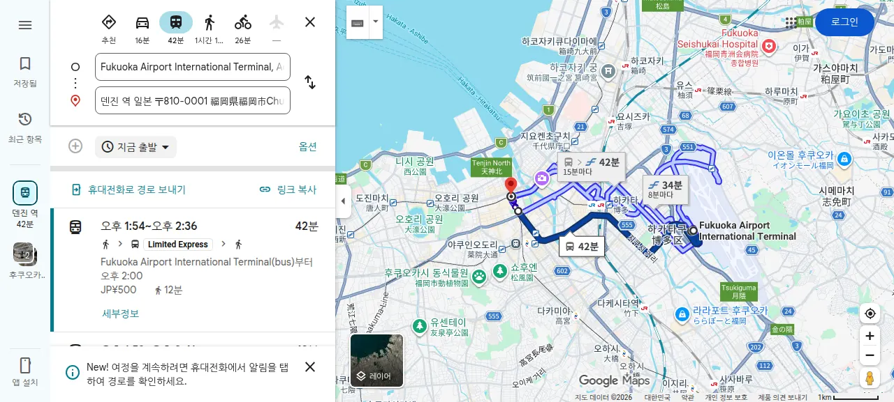
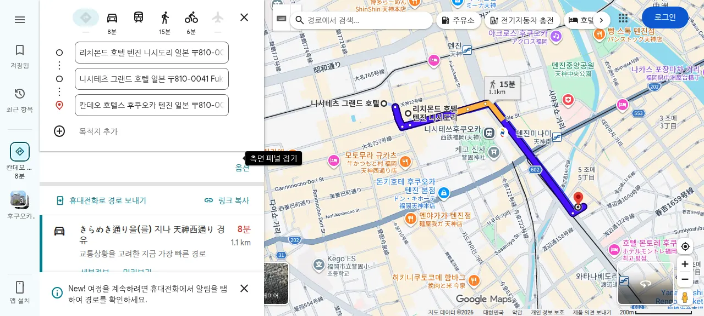

2 NIGHTS · 3 DAYS
후쿠오카에서
천천히, 맛있게.
텐진의 골목과 장어 한 상, 그리고 토리아스의 동물들까지. 꼭 필요한 일정과 길만 담은 여행 안내서.
ITINERARY
세 날의 일정
시간이 고정된 일정은 진하게 표시했어요.
ARRIVAL인천에서 텐진으로
첫날은 도착 지연을 고려해 예약 없는 가벼운 저녁이 안전합니다.
인천공항 T1 도착체크인 · 수하물 위탁 · 출국심사
후쿠오카 도착입국심사와 수하물 수령, 17:30 전후 이동 시작
공항 → 텐진국제선 8번 승강장 Airport Express가 1순위
길찾기 ↗ 저녁과 산책아카노렌 · ShinShin · 라쿠텐치 중 현장 선택
MAIN DAY장어 점심과 동물원
11시 식사와 13시 입장을 모두 지키려면 갈 때는 택시가 가장 안전합니다.
아침 식사숙소 근처 카페, 이후 텐진·다이묘 산책
우나후지 예약입장 직후 주문 · 늦어도 12:05 계산 시작
택시 출발 마감약 14.4km · Google Maps 기준 약 30분. 주말 정체 고려.
택시 경로 ↗ 토리아스 후레아이 동물원16:00까지 관람 · 입장료 500엔 · 먹이 100~200엔
동물원 지도 ↗ 텐진으로 귀환270번 버스의 16시 이후 첫차와 다음 차를 전날 저장
토요일 저녁야마나카 · 하나미도리 · 카와야 · NIKUICHI 중 예약
대중교통만 이용하면?12시 이후 출발 시 동물원 도착이 약 13:35~13:53으로 늦어집니다. 13시 입장이 중요하므로 갈 때 택시, 돌아올 때 대중교통을 권장합니다.
LAST DAY시내 산책 후 공항으로
귀국편 출발 3시간 전 국제선 터미널 도착을 목표로 합니다.
체크아웃 · 짐 보관숙소에 짐을 맡기고 가볍게 이동
공원 또는 쇼핑오호리·마이즈루공원 / 텐진 쇼핑 중 선택
점심치카에 · 멘타이주 · 나가하마케 중 선택. 토요일 장어와 겹치므로 요시즈카 우나기야는 후순위.
텐진 출발 권장Airport Express 만석·정체 시 지하철 + 무료 연락버스로 전환
공항 길찾기 ↗ 국제선 터미널 도착체크인 · 수하물 · 출국심사 · 면세점
TW208 출발22:00 인천공항 T1 도착 예정
GETTING AROUND
교통은 이렇게
짐, 정체, 환승을 고려한 우선순위입니다.
01공항 국제선 → 텐진
Airport Express
국제선 8번 승강장에서 니시테쓰 텐진 고속버스터미널까지 약 30~40분. 만석이면 다음 차를 기다려야 합니다.
- 현금 500엔 / IC카드 안내 480엔
- 대안: 무료 연락버스 + 지하철
공식 안내 ↗
02우나후지 → 동물원
12:10 전 택시
13시 입장을 지키는 핵심 이동. 식사를 1시간 안에 마치고 택시로 약 30분 이동합니다.
- 12:00~12:10 출발
- 12:35~12:50 도착 목표
Google Maps ↗
03동물원 → 텐진
니시테쓰 270번
토리아스 히사야마 정류장에서 텐진 방향 버스 이용. 배차가 길 수 있어 전날 실제 토요일 시간표를 캡처합니다.
- 16시 이후 첫차와 다음 차 저장
- 주말 정체 포함 50~60분 이상
날짜별 검색 ↗

공항 국제선 → 텐진 · 조회 시점 예시이므로 당일 재확인
STAY
텐진 숙소 후보
2026년 8월 19일, 성인 2명·2박 조회 기준. 현재 숙소는 미정입니다.
추천 1호텔 그란돌체 하카타
406,945원텐진역 도보 7~8분 · 무료 취소 표시 · 위치와 가격 균형
지도 ↗
추천 2도큐스테이 후쿠오카 텐진
417,127원텐진역 도보 10~11분 · 객실 내 편의시설 장점
지도 ↗
넓은 객실더 원파이브 빌라
480,886원텐진역 도보 14~15분 · 킹침대 · 무료 취소 표시
지도 ↗
예산 후보리치몬드 텐진 니시도리
368,718원도보 5~6분 · 최저가가 흡연실이므로 금연 재고 확인
지도 ↗

숙소 후보 위치 비교
EAT & DRINK
맛집 지도
분류 버튼으로 골라보고, 사진을 눌러 Google Maps를 여세요.
BEFORE YOU GO
준비 체크리스트
체크 상태는 이 기기의 브라우저에 저장됩니다.